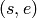

splitify¶
splitify writes out differences of masses for the splits of the tree.
usage: splitify [options] placefile(s)
Options¶
| -o | Specify the filename to write to. |
| --out-dir | Specify the directory to write files to. |
| --prefix | Specify a string to be prepended to filenames. |
| --point-mass | Treat every placement as a point mass concentrated on the highest-weight placement. |
| --pp | Use posterior probability for the weight. |
| --unweighted | Perform an unweighted splitify. |
Details¶
The first step to perform edge PCA is to make a matrix with rows indexed by the samples, and columns by the edges of the tree.
The  entry of this matrix is the difference between the distribution of mass on either side of edge  for the sample
for the sample  .
Specifically, it is the amount of mass on the distal (non-root) side of edge minus the amount of mass on the proximal side.
The matrix is indexed such that the first numerical column is edge labeled 0 in the reference tree.
The splitify subcommand simply writes out this matrix.
.
Specifically, it is the amount of mass on the distal (non-root) side of edge minus the amount of mass on the proximal side.
The matrix is indexed such that the first numerical column is edge labeled 0 in the reference tree.
The splitify subcommand simply writes out this matrix.